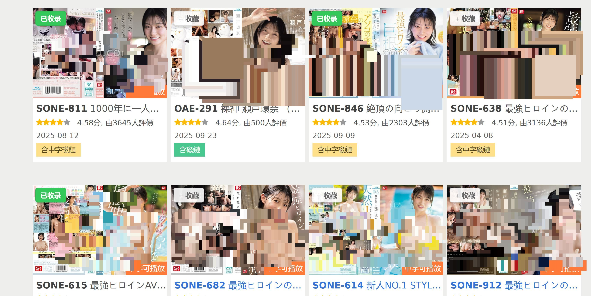
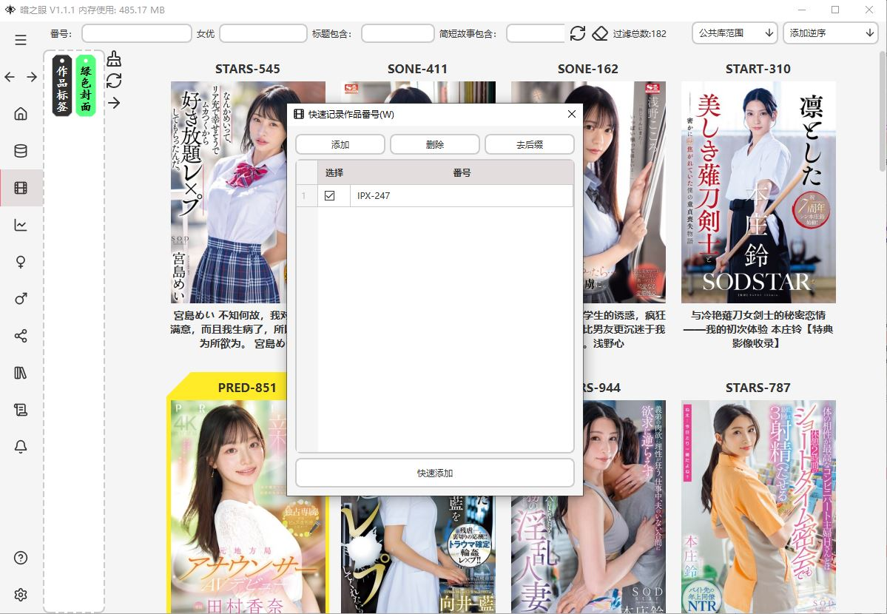
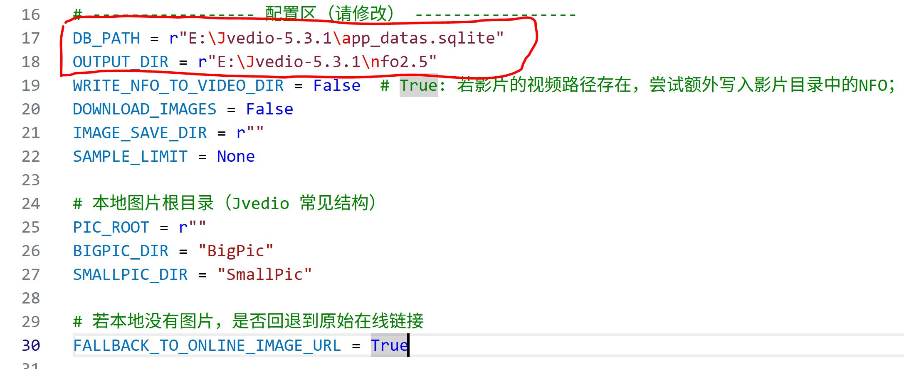

入门指南
下载软件¶
 把下面的插件也下载了。
把下面的插件也下载了。
安装浏览器插件¶
这里以「本地加载已解压扩展」为主，不需要商店账号。三种浏览器可以同时安装，但建议只启用一种进行自动采集，避免重复打开页面。
Firefox 插件¶
- 打开 Firefox，地址栏输入：
about:debugging#/runtime/this-firefox - 点击页面中的 「临时加载附加组件」（或「Load Temporary Add-on」）。
- 在文件选择对话框中，定位到仓库目录下：
extensions/firefox_capture/manifest.json，选中并打开。 - 右上角会出现
DarkEye Capture图标： - 看到图标说明加载成功。
- 关闭浏览器或重启后需要重新临时加载


Chrome 插件¶
- 打开 Chrome，地址栏输入：
chrome://extensions/ - 右上角开启 「开发者模式」。
- 点击左上角 「加载已解压的扩展程序」（Load unpacked）。
- 在文件选择对话框中，选择目录：
extensions/chrome_capture，然后确认。 - 在扩展列表中确认：
- 出现
DarkEye Capture，且开关为开启状态。 - 点击「详情」可以看到：
- 背景页类型为 Service Worker；
- 有一个 Offscreen 文档在运行（用于接收软件端下发的自动采集指令）。


Edge 插件¶
Edge 基于 Chromium，可以直接复用 extensions/chrome_capture 目录：
- 打开 Edge，地址栏输入：
edge://extensions/ - 左下角开启 「开发人员模式」（Developer mode）。
- 点击 「加载解压缩的扩展」（Load unpacked）。
- 在文件选择对话框中，选择目录：
extensions/chrome_capture，然后确认。 - 在扩展列表中确认
DarkEye Capture已启用。
提示：
- 若你只想让 Firefox 自动采集，可以在 Chrome / Edge 中关闭DarkEye Capture扩展的开关；
- 若只想用 Chrome/Edge 自动采集，可以在 Firefox 的附加组件管理中禁用DarkEye Capture，避免多个浏览器同时响应同一条爬虫指令。

如何添加新作品信息¶
目前有 三种主要方式，普通用户推荐第 1 种。
方式一：用浏览器插件采集（推荐）¶
适合：你平时在 javdb / javlibrary / javtxt 上逛片子。
步骤：
确保： DarkEye 软件已启动 Firefox 插件已加载（上一节的步骤） 在 Firefox 打开其中任意一个网站，例如 javdb

在网页上浏览某个作品详情页如果插件与软件都正常启动，软件有收藏按钮悬浮于作品上，点击收藏开始开始爬取该作品的信息，写入本地数据库。
现在爬虫采用浏览器爬虫，会弹出javlib，需要先手动过反爬。第一次访问 javlibrary 时，可能会被 Cloudflare 挡一下，手动点一次通过即可，之后约 20 分钟内都不需要再过盾。采集的内容包括：发布时间、导演、中/日文标题、剧情简介、女优、男优、标签、封面等。
方式二：从本地视频反向识别¶
适合：你本地已经有大量视频，希望让软件尽量自动识别番号并入库。
在软件中打开：设置 -> 视频 添加你存放影片的文件夹路径（可以多个） 旧版打开：管理 -> 批量操作 -> 查找本地视频并录入添加
新版直接在设置路径下面点击查找本地视频并录入添加
 软件会：
软件会：
扫描你设置的文件夹
从文件名中尝试提取番号,把识别到的结果放入爬虫队列，慢慢去网上补全信息（约 20 秒一次请求）
重要提示：
测试下来大概连续100次爬虫会触发javdb的反爬，然后就不行了。如果有上千部片子，挂半小时休息半小时，然后慢慢爬。
这一步的识别准确度目前不高，只是帮你省一点力气。
建议在「管理 -> 添加/修改作品」里，后面手动检查和修正关键信息。
方式三：纯手动添加番号¶
适合：看到一个想记下来的番号，或者需要补录特别的作品。
在软件任何地方按下快捷键：W 会弹出「快速添加作品」窗口

输入标准的番号一定要大写，然后点击添加，爬虫会自动的去整理方式四：导入NFO文件（开发中）¶
标准NFO文件的格式参考 https://kodi.wiki/view/NFO_files/Templates 其中的movie
举例单个的nfo的格式要是这个样子
<?xml version="1.0" encoding="UTF-8" standalone="yes"?>
<movie>
<source>https://javdb.com/v/zkAxQ</source>
<plot>
</plot>
<title>神回！神回！！神回！！！…ハリウッドか！って位の世界観！！！雨のネオン街を颯爽と歩く謎のフルフェイス全身ラバー美女！！！…ブレードランナーか！！！これが激レアなんです！！！そしてこんな格好で外歩く様な女はアッチ(セックス)の方もスゲーに決まってるんです！！！年初めにこんな〝どエロい〟女見たらもぉ普通のAV見れなくなっちゃうから気をつけて！！！マジ半端ないエロさです！！！：夜の巷を徘徊する〝激レア素人〟！！ 11</title>
<director>
</director>
<rating>0</rating>
<criticrating>
</criticrating>
<year>2019</year>
<mpaa>
</mpaa>
<customrating>
</customrating>
<countrycode>
</countrycode>
<premiered>2019-01-03</premiered>
<release>2019-01-03</release>
<runtime>94</runtime>
<country>
</country>
<studio>プレステージプレミアム(PRESTIGE PREMIUM)</studio>
<id>MIUM-359</id>
<num>MIUM-359</num>
<genre>HDTV</genre>
<genre>苗條</genre>
<genre>蕩婦</genre>
<genre>巨乳</genre>
<genre>美臀</genre>
<genre>女優按摩棒</genre>
<tag>夜の巷を徘徊する激レア素人</tag>
<thumb>C:\Users\yin\Desktop\BigPic\MIUM-359.jpg</thumb>
<thumb>E:\Jvedio-5.3.1\data\Daxoel\pic\SmallPic\MIUM-359.jpg</thumb>
<fanart>
<thumb preview="https://c0.jdbstatic.com/samples/zk/zkAxQ_l_0.jpg">https://c0.jdbstatic.com/samples/zk/zkAxQ_l_0.jpg</thumb>
<thumb preview="https://c0.jdbstatic.com/samples/zk/zkAxQ_l_1.jpg">https://c0.jdbstatic.com/samples/zk/zkAxQ_l_1.jpg</thumb>
<thumb preview="https://c0.jdbstatic.com/samples/zk/zkAxQ_l_2.jpg">https://c0.jdbstatic.com/samples/zk/zkAxQ_l_2.jpg</thumb>
<thumb preview="https://c0.jdbstatic.com/samples/zk/zkAxQ_l_3.jpg">https://c0.jdbstatic.com/samples/zk/zkAxQ_l_3.jpg</thumb>
</fanart>
<actor>
<name>二宮和香</name>
<thumb>https://www.javsee.in/pics/actress/p37_a.jpg</thumb>
</actor>
<actor>
<name>森林原人</name>
<thumb>https://c0.jdbstatic.com/avatars/pp/PpQ0.jpg</thumb>
</actor>
</movie>
这样子就可以导入进来。
在设置->导入单个NFO数据
从Jvedio把数据转过来¶
目前感谢4965898老哥写了脚本，通过运行脚本可以把Jvedio的数据导出nfo，然后导入本软件
https://raw.githubusercontent.com/de4321/darkeye/refs/heads/main/scripts/jvideo2nfo.py
浏览器打开后右键保存py文件
或者打开仓库位置在scripts/jvideo2fno.py 下载下来
修改下面的两个位置

使用Python运行脚本，产生一个包含nfo的闻文件夹
然后通过方式四导入本软件就行了。
作品信息不完整？¶
比如没有封面的，没有标题的，还有fc2那种啥都没有的，因为爬虫的网站没有对应的信息。此时可以右键点击进入编辑区

点击下面的四个链接看看有没有信息，如果没有就代表爬虫无这部作品的信息源，如果有代表爬虫有问题或者是网络问题，此时可以在左边的爬虫区补数据。

如何补充快速缺失的信息？¶
这里缺失的信息是目标网站有的，但是因为网络问题没有爬到，然后可以补充，网站上没有的东西只能手动修改。
按W键，弹出下面的界面

在右侧选择要补充的信息，然后点击漏斗就行了，注意建议左侧排除那些没有信息的，比如FC2等等。
会判断哪个字段是缺少的，然后爬虫爬好后只覆盖缺少的字段。字段之间的关系是或。比如影片A只缺少了时长，影片B只缺少了片商，如果此时选了时长和片商，则会把A和B都添加到爬虫里面去，然后最后只更新A的时长和B的片商，其他原本有的不会被覆盖。
如果要覆盖原来的，那么就只能点击到作品编辑页，通过这个爬虫去爬取，会覆盖，供你确认。
如何修改作品信息？¶
 - 点击番号可复制
- 点击番号可复制
-
左键点击是跳转作品详情页
-
右键点击是跳转作品修改页
 1. 封面栏可点击找本地的图片或者直接把javlib的图片拖进来，右键可以打开本地的图片位置
1. 封面栏可点击找本地的图片或者直接把javlib的图片拖进来，右键可以打开本地的图片位置
-
外部导航可以导航到不同的网站
-
可选爬虫，爬后会更新这个页面，更新后有橙框提示并可提交修改
-
女优选择器
-
男优选择器
-
基础信息
-
可跳转到详情页
-
提交按钮
-
标签选择器，左栏是标签
-
关系图，可点击跳转
-
编辑区，可写感受，影评，然后可通过
[[ ]]链接到其他的作品，并在力导向图区中显示。
修改可以自由的编辑，主要是这个爬虫区
 这个爬虫区可以补充信息，如果这个信息是网上有的只是因为网络问题没下来，选合适的，然后点击下载。更新后会有橙色的提示。然后可以提交并修改。
这个爬虫区可以补充信息，如果这个信息是网上有的只是因为网络问题没下来，选合适的，然后点击下载。更新后会有橙色的提示。然后可以提交并修改。
如何修改女优信息？¶
当你看见大量的灰色按钮时？不要慌，点击管理->批量操作->更新标记需要更新的女优。爬虫会自动处理，但是爬虫不是万能的会有问题，比如遇到下面的奇怪的情况。左键进入

右键进入作品编辑区

在下面的女优选择区把奇怪的东西全移出，然后保存。

然后回到这个奇怪的女优区，右键进入编辑

点击删除按钮，把女优删除

女优爬虫后还是灰色的？¶
说明要么是错误爬虫，要么是遇到搜索结果很多的情况了，右键点击编辑

点击跳转

选择正确的女优，点击

如果装了插件，右下角会有一个采集按钮，点击

采集后信息会更新到面板上，然后点击提交就行，右边的中文需要自己慢慢编辑，最顶上的就是有优先显示的。现在默认显示的名字是cn最上面一栏，现在就是白石もも

男优是灰的？¶
这个没有办法，只能手动收集信息。
自定义外部链接¶
现在的外部链接是json驱动的

要自定义，就打开data/crawler_nav_buttons.json这个json文件

单个的例子，包括名字，要跳转的url与description,包括{serial}特殊记号，有了这个记号，就会从当前页面中取出这个番号输入
{
"name": "javtxt",
"url": "https://javtxt.com/search?type=id&q={serial}",
"description": "获得故事与标题，但是没有封面"
},
下一个例子,有的网站只接受fanza的那个id比如ipx00247查询的，就多加一行"serial_transform": "fanza",
{
"name": "fanza",
"url": "https://www.dmm.co.jp/search/=/searchstr={serial}/limit=30/sort=rankprofile",
"serial_transform": "fanza",
"description": "fanza售卖网站，非日本本土，需日本vpn且特殊插件才能访问"
},
强烈建议把这个例子加上可以更好的帮你定位大图，老用户需要手动添加。
{
"name": "fanza大图封面",
"url": "https://awsimgsrc.dmm.co.jp/pics_dig/digital/video/{serial}/{serial}pl.jpg",
"serial_transform": "fanza",
"description": "fanza大图封面可能链接"
},
LLM翻译的使用¶
外购API¶
这个有钱就可以现在是兼容OpenAi的
本地搭建（推荐）¶
以本地有张5060(8G)为例。 使用llama.cpp或者ollama
下载
https://huggingface.co/SakuraLLM/Sakura-7B-Qwen2.5-v1.0-GGUF/tree/main
下载q4量化的gguf文件，或者其他的LLM大模型，现在更强可以下载更大的。小的下载更好的
llama.cpp¶
运行参数
在powershell中，定位到编译好的llama-server.exe的位置
llama-server.exe --host 0.0.0.0 --port 8080 --model E:\LLM\sakura-7b-qwen2.5-v1.0-iq4xs.gguf -c 2048 -n 512 --gpu-layers 99 --batch-size 512 --ubatch-size 256 --threads 6 --cache-type-k q8_0 --cache-type-v q8_0 --no-mmap --mlock --flash-attn 'on'
按照入下设置
BaseURL输入
http://127.0.0.1:8080/v1
模型的名字一般就是本地那个gguf的名字
或者可以在浏览器输入http://127.0.0.1:8080/v1/models查看模型的名字

其中本地运行时没密码，随便输入一个，然后测试一下翻译的好坏。